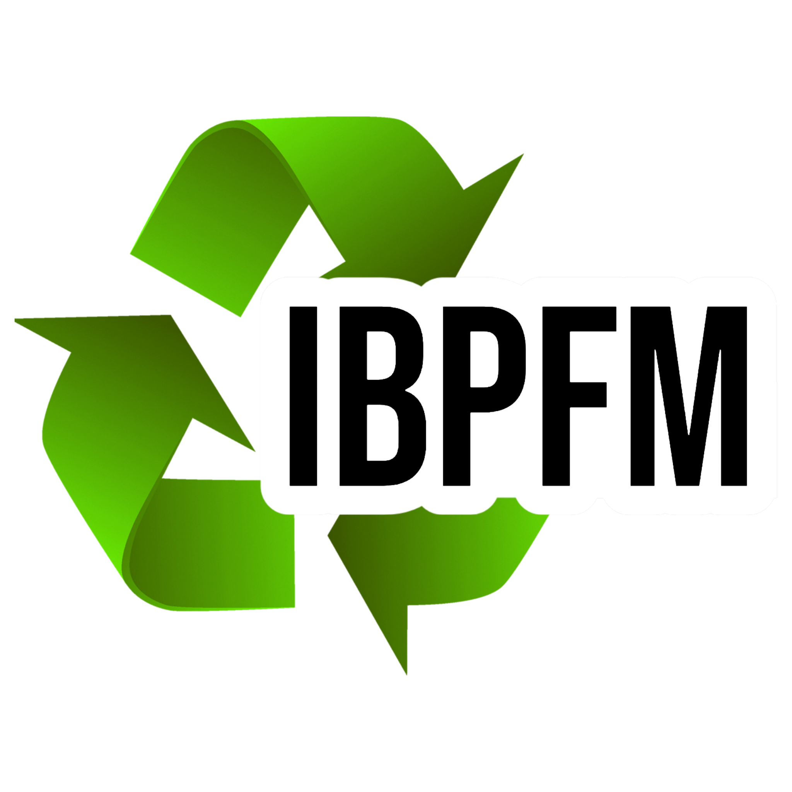

Bot With DotPollution can cause significant damage to various environmental systems, leading to a range of adverse effects. Here’s an overview of how different types of pollution impact the environment:
1. Air Pollution
Climate Change: Greenhouse gases like carbon dioxide (CO2), methane (CH4), and nitrous oxide (N2O) trap heat in the atmosphere, contributing to global warming and altering climate patterns.
Acid Rain: Sulfur dioxide (SO2) and nitrogen oxides (NOx) can react with water vapor to form sulfuric and nitric acids, leading to acid rain. This can harm forests, lakes, rivers, and soil by altering pH levels.
Ecosystem Damage: Pollutants like ozone (O3) at ground level can damage plant tissues, reduce agricultural yields, and affect biodiversity by harming sensitive species.
2. Water Pollution
Eutrophication: Excess nutrients from fertilizers (nitrogen and phosphorus) can lead to algal blooms in water bodies. These blooms deplete oxygen levels in the water, causing dead zones where aquatic life cannot survive.
Contaminated Water Supply: Pollutants like heavy metals, pesticides, and pathogens can contaminate drinking water sources, posing health risks to humans and wildlife.
Habitat Destruction: Polluted waters can lead to the loss of habitats for aquatic species, affecting fish, amphibians, and other organisms dependent on clean water environments.
3. Soil Pollution
Soil Degradation: Contaminants such as heavy metals, pesticides, and industrial chemicals can degrade soil quality, reducing its fertility and affecting plant growth.
Toxicity to Plants and Animals: Polluted soil can harm plant life, leading to reduced agricultural productivity and affecting the organisms that depend on these plants, including herbivores and, indirectly, predators.
4. Land Pollution
Waste Accumulation: Improper disposal of waste, including plastics and hazardous materials, can lead to landfills overflowing and leaching of toxins into the soil and groundwater.
Loss of Natural Habitat: Land pollution can result from urban sprawl and industrial activities, leading to habitat loss and fragmentation, which threatens wildlife and plant species.
5. Marine Pollution
Oil Spills: Spills can coat marine life and habitats with oil, leading to long-term ecological damage, including the death of marine animals and disruption of reproductive cycles.
Plastic Pollution: Plastics in the ocean can harm marine animals through ingestion and entanglement, and break down into microplastics that are ingested by smaller organisms, entering the food chain.
Chemical Pollution: Heavy metals, pesticides, and other toxic substances can accumulate in marine organisms, leading to harmful effects on marine ecosystems and human health through seafood consumption.
6. Noise Pollution
Disturbance to Wildlife: Excessive noise can disrupt animal communication, navigation, and breeding patterns. It can also lead to habitat abandonment by sensitive species.
Impact on Ecosystems: Persistent noise pollution can alter the behavior of animals and ecosystems, affecting predator-prey relationships and ecosystem dynamics.
7. Light Pollution
Disruption of Ecosystems: Artificial light can interfere with the natural behaviors of nocturnal animals, including migration patterns, reproduction, and feeding.
Impact on Human Health: Light pollution can disrupt human circadian rhythms and contribute to sleep disorders, which can indirectly affect broader environmental health.
These environmental impacts of pollution are interconnected and can lead to cascading effects on ecosystems and human societies. Addressing pollution often requires comprehensive strategies that target multiple sources and types of pollutants to protect and restore environmental health.